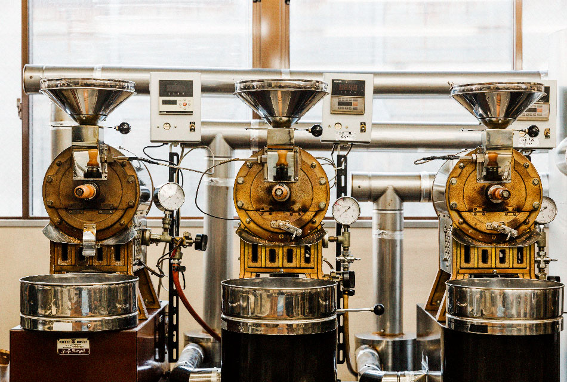
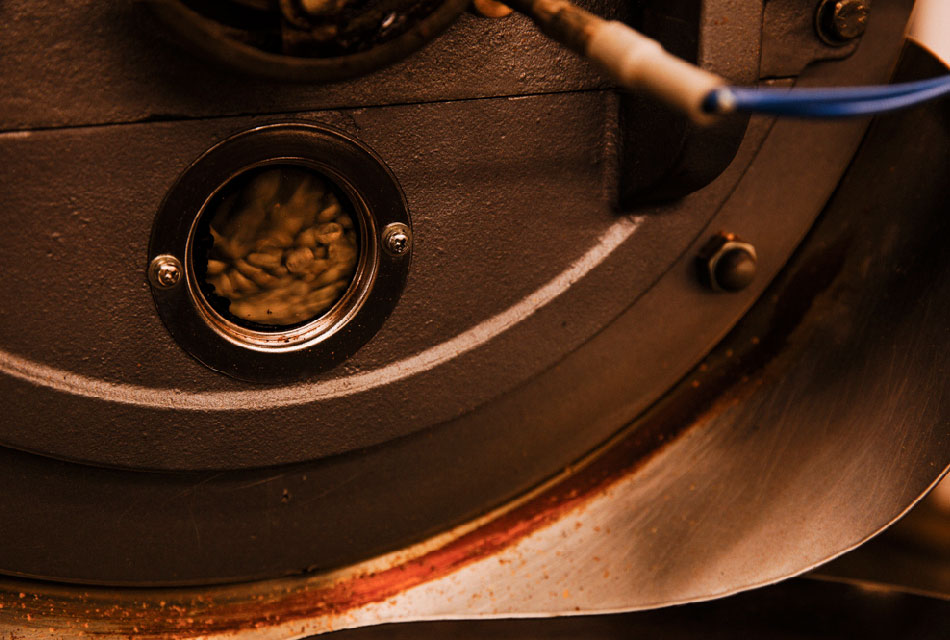
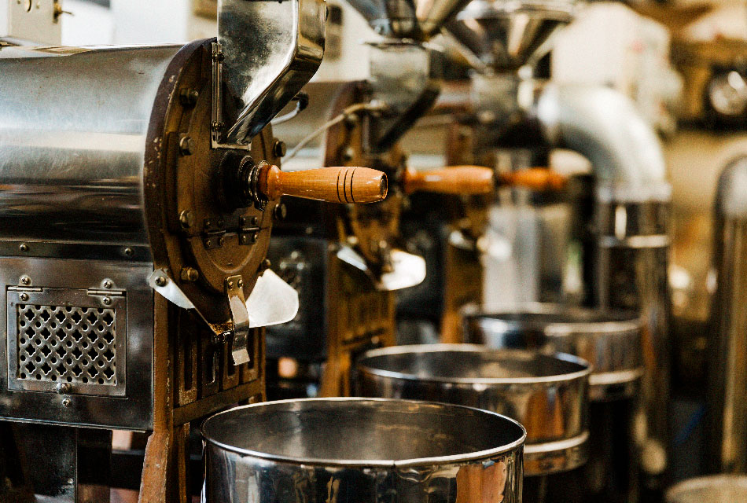

To tell the truth, it would be a lot easier if we could finish roasting coffee to be shipped on the same day in a single roasting. On the contrary, we roast coffee dozens of times a day in our workshop. A major coffee company would have done what we do dozens of times in just one roasting. But this is exactly what we do. In order for the green coffee beans from the coffee producing region to be enjoyed as coffee, they must be roasted in a roasting oven. Until now, the roasting of coffee has been considered to be an efficient mass-production process.
To roast coffee, a roasting oven is used. This roasting oven is shaped like a locomotive. First, green coffee beans are fed into the roasting kettle from the hopper at the top of the kettle.
The green beans fed from the hopper flow into a drum inside the roasting kettle. This drum is shaped like a round tube, similar to the drum in a washing machine. And under this drum is a burner. The green coffee beans are gradually heated in the drum by the fire from the burner at the bottom as the drum inside the roasting oven rotates. The greenish milky white green coffee beans begin to turn a golden brown, and gradually turn into the deep brown that we often see. The roasting process takes about 20 minutes from the time the green coffee beans are put in to the oven until roasting is complete. If we want to shorten the roasting time by considering only efficiency, we should increase the heat. However, when roasting with high heat, the heat does not reach the core of the bean and only the surface is burnt. Roasting coffee beans inevitably requires about 20 minutes of time. For this reason, the roasting time cannot be extremely shortened, but if the capacity of the roasting oven is increased, the amount of coffee beans produced at one time can be increased. If you want to produce a large amount of coffee beans efficiently, you should use a large roasting oven. Some large roasting ovens have a capacity of 100 kg or more. Using such a large roasting oven, 100 kg of coffee beans can be produced at a time in 20 minutes. However, with such a large roasting oven, it is not possible to adjust the roasting time and heat each time. This is because roasting in such a roasting oven is controlled by a computer. Once programmed into the computer, the roaster will automatically roast and finish the coffee beans according to the settings. Therefore, there is very little human intervention during the roasting process. A large amount of coffee beans can be produced at one time, and the human labor and time required for roasting is also reduced.
In this context, all of the roasting kettles we have installed are small ones. We have six roasting kettles, the largest of which has a capacity of 12 kg. However, we have absolutely no plans to introduce roasting kettles with a larger capacity in the future. This is because "small roasting" using a small roasting oven is one of our specialties. The reason why we choose a small capacity roasting oven is because we believe that roasting by hand, fine-tuning the heat and roasting time to suit the brand in front of us, is the best way to bring out the best flavor of that brand. Coffee roasting does not necessarily produce a flavor that is superior to that of the brand. Coffee roasting exists to bring out the best flavor of the brand.